Properties of the Fourier transform#
In this exercise we will look at the properties of the Fourier transform from a practical point of view, since we often deal with them when measuring signals:
linearity,
time scaling,
(time reversal),
time shifting,
(amplitude modulation - frequency shifting),
differentiation and integration,
convolution and product of functions.
Task#
Homework
Using the signal generator and the Arduino acquisition system, prepare the signals with which you will demonstrate the properties of the Fourier transform specified in the task data.
Prepare and acquire the signals in a group with colleagues who have the same data.
You can download the LabVIEW acquisition program as a zip archive.
Prepare a short report (3 to 10 code cells in a Jupyter Notebook environment) that shows the task data (from the table) and that you have taken all the parameters and requirements of the task into account. Demonstrate the effect of the selected property of the Fourier transform on the two acquired signals (look for examples in the lecture and exercise notes).
Submit the report in .pdf format (see the homework submission instructions).
Addendum: Investigate the convolution / multiplication property of signals in connection with the Fourier transform, and show and comment on it using windows (use scipy.signal.windows) with one of the signals acquired in the exercise.
Linearity#
Linearity
fs = 100 # Hz
dt = 1 / fs
t = np.arange(0, 2, dt)
A = 5
p = 4
o = 2
x = A * np.sin(2*np.pi*t * p) + o*2
y = 2*A * signal.square(2*np.pi*t * p/2) + o
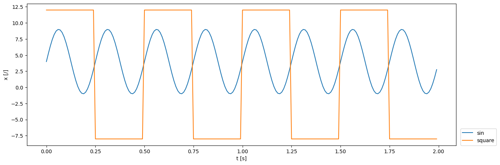
X = np.fft.rfft(x) / len(t) * 2
Y = np.fft.rfft(y) / len(t) * 2
freq = np.fft.rfftfreq(len(t), dt)
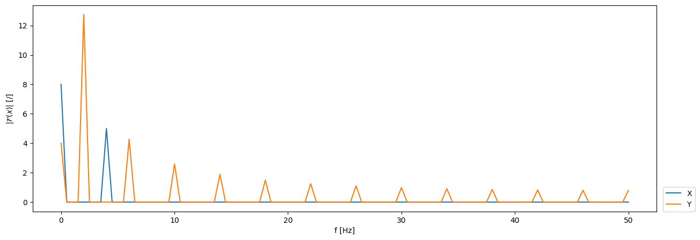
Demonstration of the linearity property:
v = x + y
V = np.fft.rfft(v) / len(t) * 2
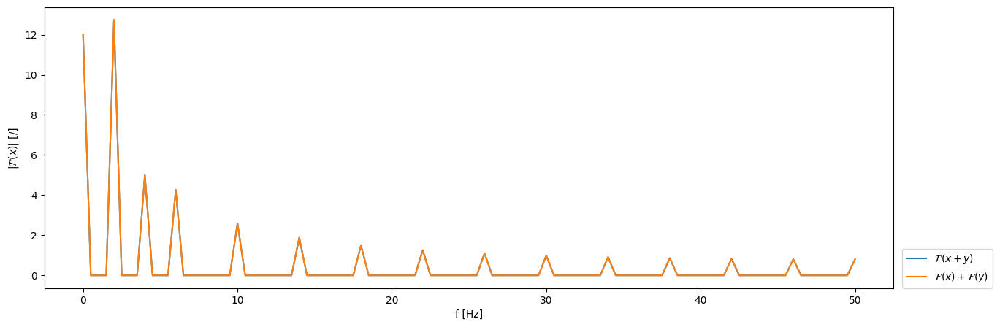
Using linearity to correct a superimposed signal:
V_Y = V - Y
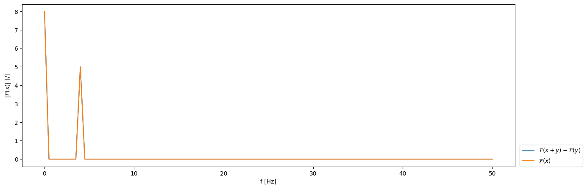
Inverse FFT of the difference between the sum of the signals and the superimposed signal:
v_y = np.fft.irfft(V_Y/2*len(t))
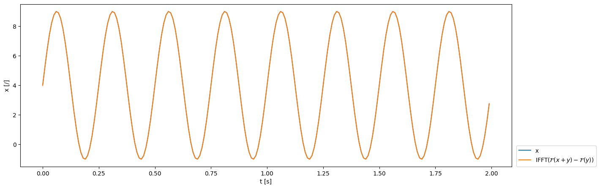
Time scaling#
Time scaling
Example 1: Gaussian impulse#
a = 2 # time scaling factor: a>1: "compression" in the time domain, "stretching" on the frequency axis (and vice versa)
sigma = 0.15 # width of the Gaussian window [s]
t0 = 1.0 # center of the pulse
# base signal: Gaussian impulse
x = np.exp(-(t - t0)**2 / (2*sigma**2))
# signal at the scaled time a*t
y = np.exp(-(a*t - t0)**2 / (2*sigma**2))
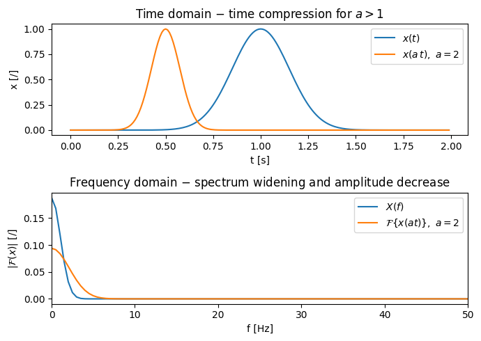
The Gaussian pulse is an aperiodic signal with finite energy, so time compression actually reduces its “area” and thus the amplitude of the spectrum by a factor of \(1/|a|\).
With the periodic, discrete sinusoidal signal in the next example, we will have a bit more trouble demonstrating this effect.
Example 2: Simulation of a sinusoidal signal measurement#
A = 1
p = 2
o = 0
a = 2
sin = lambda t, A, p, o: A*np.sin(2*np.pi*t*p) + o
x = sin(t, A, p, o)
at = np.arange(0, 2, a*dt)
y = sin(at, A, p, o)
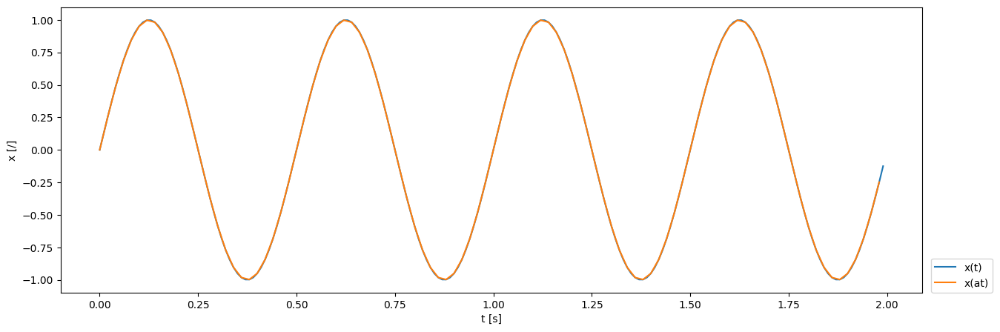
The measurement duration is the same, but with the time-scaled step \(a \, \Delta t\):
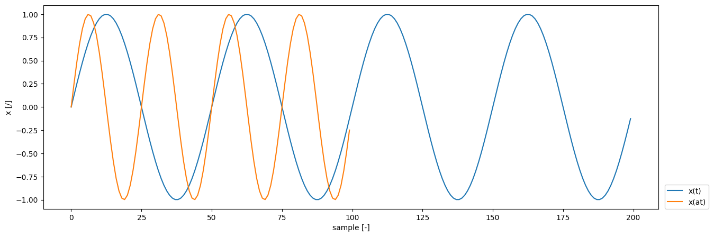
X = np.fft.rfft(x)
Y = np.fft.rfft(y)
freq = np.fft.rfftfreq(len(t), dt)
freq_a = np.fft.rfftfreq(len(at), a*dt)
If the time scaling is known and taken into account in the conversion, the result is correct:
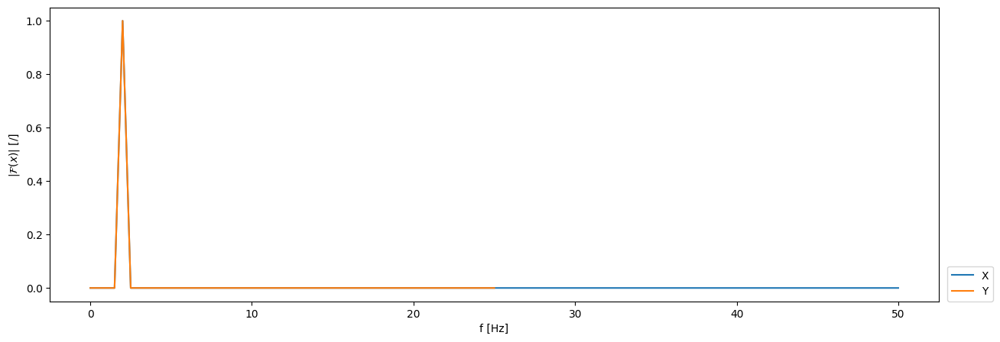
Time scaling causes us trouble in this case if we are not aware of it during the measurement:
freq_a_s = np.fft.rfftfreq(len(at), dt)
To demonstrate the effect of time scaling, we make a similar “mistake” when normalizing the spectra:
Unknowingly, we measured with the sampling frequency a*fs instead of fs. We will therefore (incorrectly) normalize the result with N=T/fs.
(Clearly, in practice we would not make such a mistake - the actual number of samples is evident from the measured signal. We have trouble with time scaling when we are not aware of it - this is a hypothetical scenario.)
X = X / len(t)
X[1:-1] *= 2
Y = Y / len(t) # the problem arises here - the actual length of signal y is shorter than vector t
Y[1:-1] *= 2
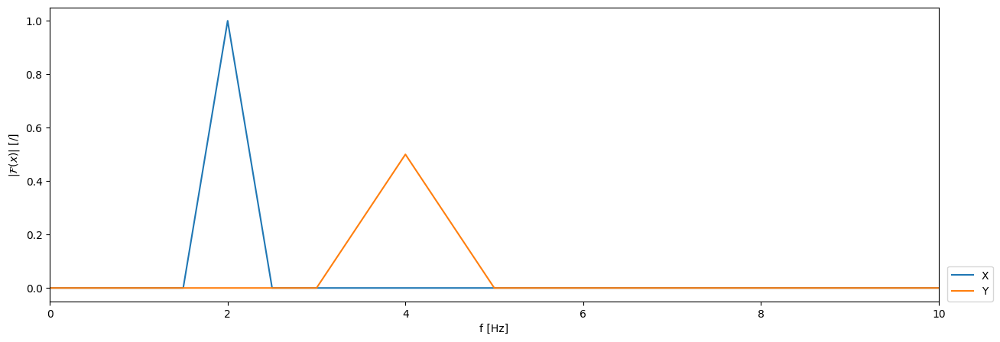
Correction of time scaling
We converted the signal to the frequency domain at frequencies \(f/a\), so now let us plot it at \(f/a\):
freq_a_popravek = freq_a_s / a
Amplitude correction:
Y_popravek = np.abs(a) * Y
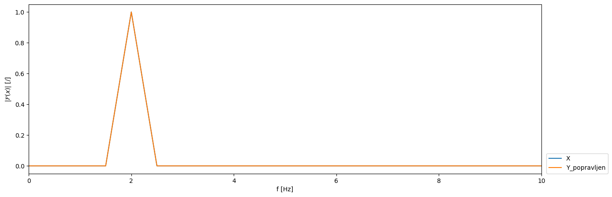
Time shifting#
Time shifting
A = 1
p = 2
o = 0
t_0 = 0.55
square = lambda t, A, p, o: A*signal.square(2*np.pi*t*p) + o
x = square(t, A, p, o)
y = square(t-t_0, A, p, o)
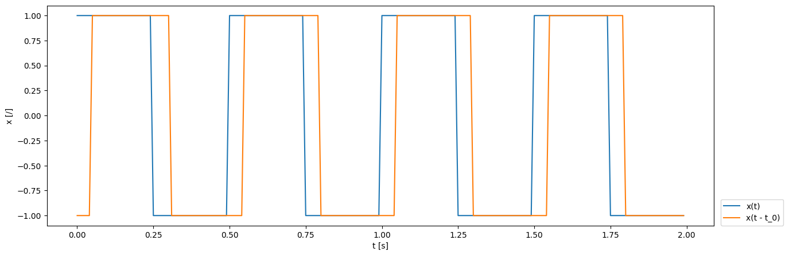
X = np.fft.rfft(x)
Y = np.fft.rfft(y)
freq = np.fft.rfftfreq(len(t), dt)
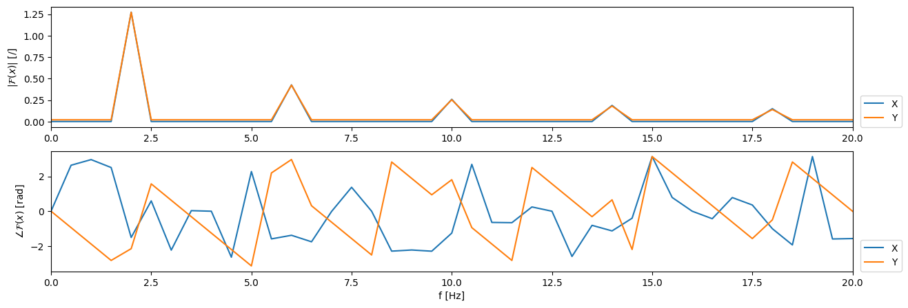
X_shift = np.exp(-1j*2*np.pi*freq*t_0) * X
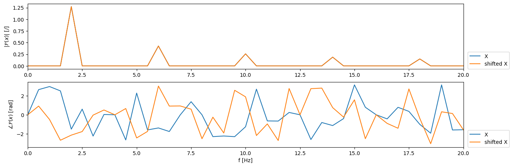
We check the success of the time shift in the time domain:
x_shift = np.fft.irfft(X_shift)
<matplotlib.legend.Legend at 0x7f716fe74e10>
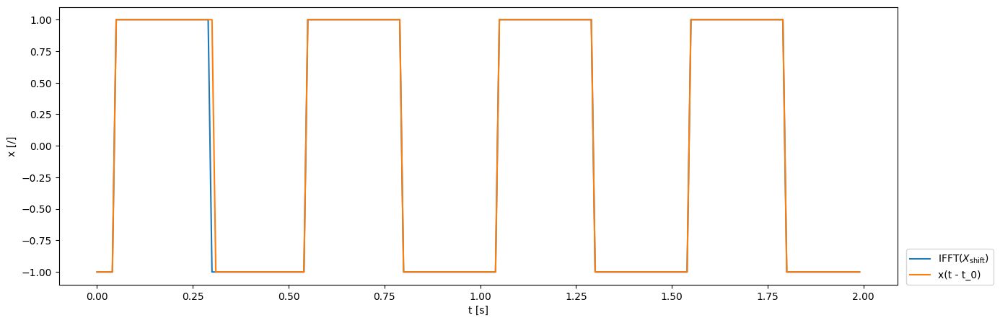
Amplitude modulation#
Amplitude modulation (frequency shifting)
or:
A = 1
p = 2
o = 0
f_0 = 1.
x = sin(t, A, p, o)
mod = np.cos(2*np.pi*f_0*t)
y = x * mod
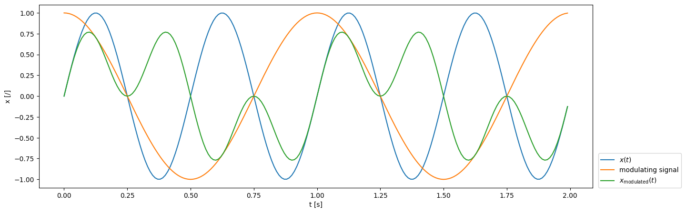
X = np.fft.rfft(x)
Y = np.fft.rfft(y)
freq = np.fft.rfftfreq(len(t), dt)
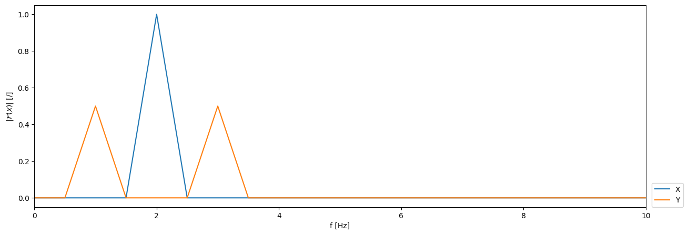
Differentiation and integration#
Differentiation and integration
and conversely:
A = 1
p = 2
o = 1.5
x = sin(t, A, p, o)
Let us recall:
\(\frac{\mathrm{d}}{\mathrm{d} \, t}A \, \sin(a \, x) + o = A \, a \, \cos(a \, x)\)
y = A*2*np.pi*p*np.cos(2*np.pi*t*p)
np.allclose(y, np.gradient(x, dt, edge_order=2), rtol=1e-2)
True
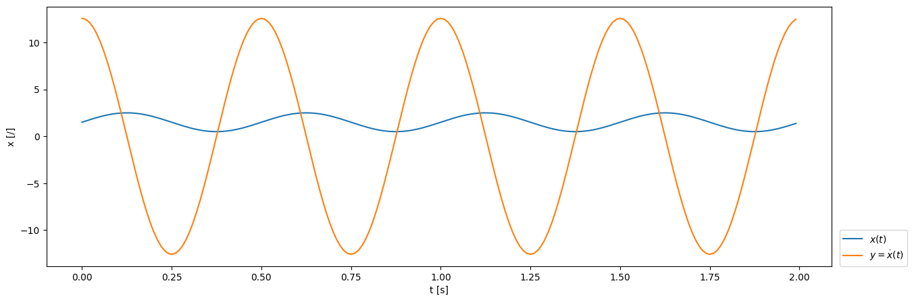
X = np.fft.rfft(x) / len(t)
Y = np.fft.rfft(y) / len(t)
X[1:] *= 2
Y[1:] *= 2
freq = np.fft.rfftfreq(len(t), dt)
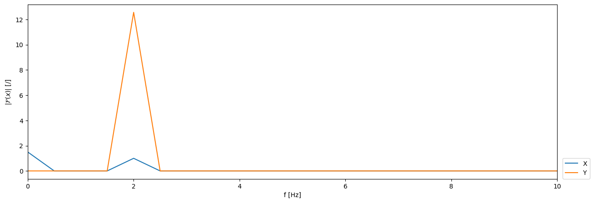
Derivative in the frequency domain:
\(\mathcal{F}(\dot{x}(t)) = \mathrm{i} \, \omega \, \mathcal{F}(x(t))\)
omega = 2*np.pi*freq
dX = 1j*omega * X
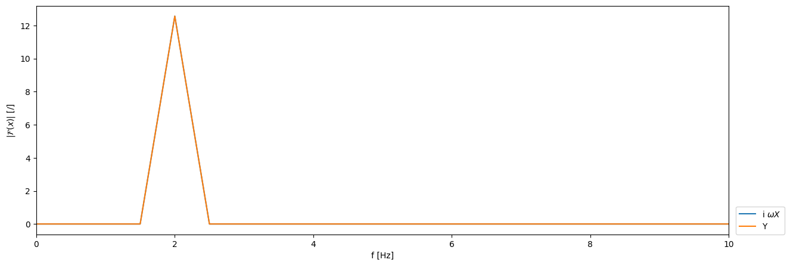
Integral in the frequency domain:
\(\mathcal{F}(x(t)) = 1 / (\mathrm{i} \, \omega) \cdot \mathcal{F}(\dot{x}(t))\)
omega[0] = 1e-6
ing_Y = 1 / (1j*omega) * Y
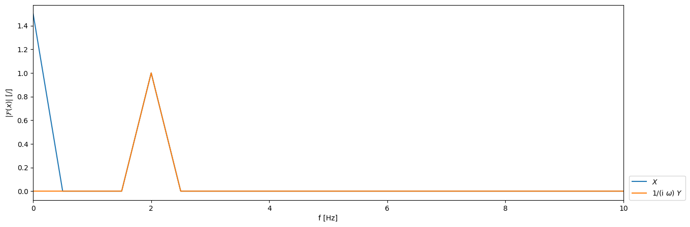
Convolution and product of functions#
Convolution and product of functions
and
Note
The symbol \(*\) denotes convolution:
Since the product in the frequency domain is a numerically much more efficient operation than convolution in the time domain, this is one of the most important properties of the Fourier transform!
Visualization of convolution on a discrete signal:
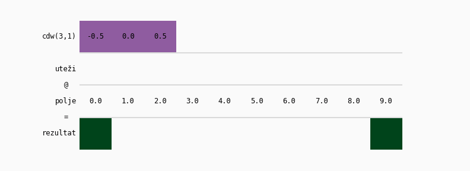
A = 1
p = 3
o = 1.5
x = square(t, A, p, o)
X = np.fft.rfft(x) / len(t)
X[1:] *= 2
freq = np.fft.rfftfreq(len(t), dt)
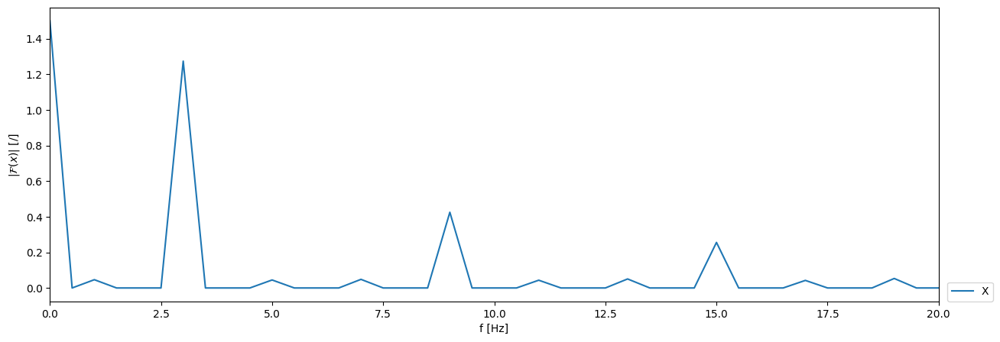
Let us prepare a band-pass frequency filter that passes only in the range \((1.5, 4.5)\) Hz:
freq_band = np.array([1.5, 4.5])
b, a = signal.butter(3, freq_band, btype='bandpass', fs=fs)
Let us prepare the frequency response function of the filter \(H(f)\):
w, H = signal.freqz(b, a, len(freq), whole=False, fs=fs)
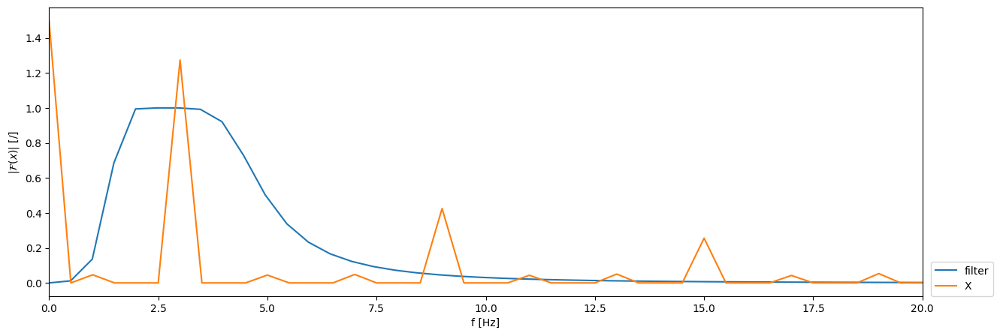
Let us filter the signal by multiplication in the frequency domain:
X_filtriran = X * H
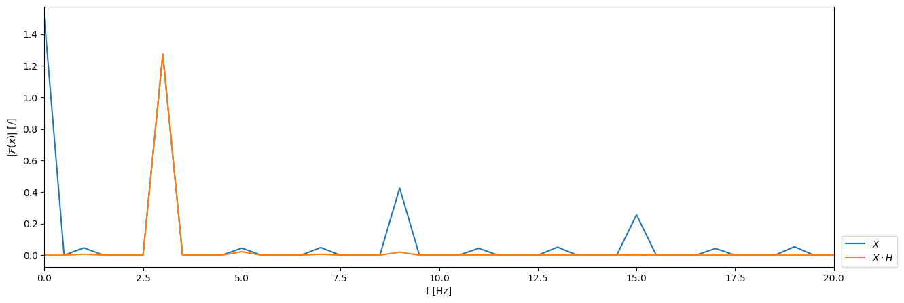
Let us also look at the impulse response function of the filter \(h(t)\) (the response of the filter in time):
h = np.fft.irfft(H)
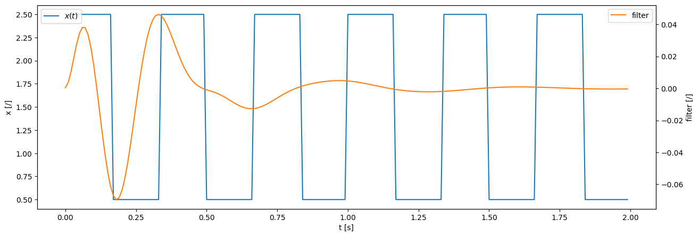
Let us filter the signal by convolution in the time domain:
x_filtriran = signal.convolve(x, h, mode='full')[:len(x)]
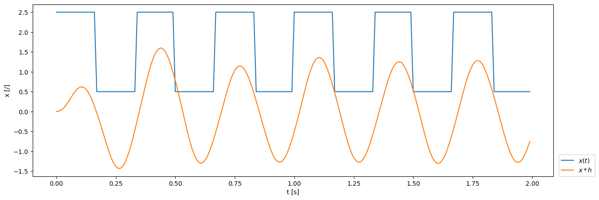
Let us compare the results:
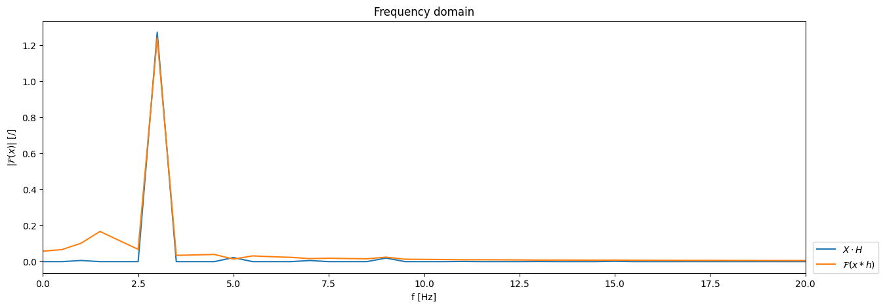
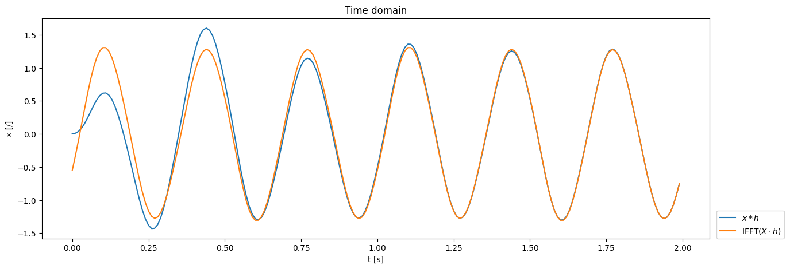
The difference is a consequence of the implementation of the convolution function (scipy.signal.convolve). Check the effect of the parameter mode!